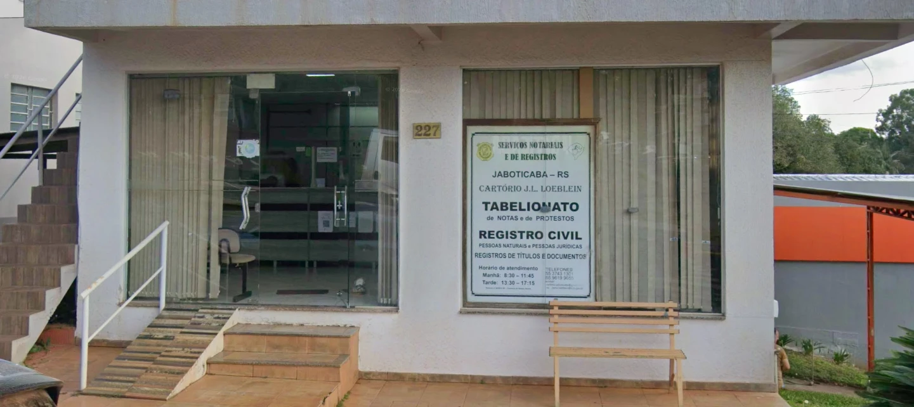

Serviços Notariais e de Registros de Jaboticaba
Tabelionato de Notas, Protestos, Registro Civil Pessoas Naturais, Registro Títulos e Documentos, Registro Civil Pessoas Jurídicas.

O que você precisa fazer?
Escreva com suas palavras ou escolha um serviço abaixo.
Não encontramos esse assunto. Tente outras palavras ou fale com o cartório, que indica o serviço certo.
Falar com o cartórioMais procurados
- Registrar um filho recém-nascidoRegistro Civil das Pessoas Naturais
- Pedir segunda via de certidãoRegistro Civil das Pessoas Naturais
- Fazer uma procuraçãoNotas
- Reconhecer firma (confirmar uma assinatura)Notas
- Comprar ou vender um imóvelNotas
- Casar (habilitação e casamento civil)Registro Civil das Pessoas Naturais
- Saber se existe protesto em meu nomeProtesto de Títulos
Sem sair de casa
Solicite online
Peça certidões e faça atos de cartório pela internet. Escolha o que você precisa.
-
Portal do Registro Civil
Certidão de nascimento, casamento ou óbito pela internet
Pedido de certidão pela internet, de forma digital, do Registro Civil das Pessoas Naturais.
Pedir certidão (abre em nova aba, site externo) -
Central Nacional de Protesto
CENPROT: certidões e pesquisa de protestos
Pedidos de certidões e protestos pela internet.
Pedir ou consultar (abre em nova aba, site externo) -
RTDPJ Brasil
Certidões e registros de Títulos e Documentos e Pessoas Jurídicas
Pedidos digitais de certidões e registros de Títulos e Documentos (RTD) e de Pessoas Jurídicas (RCPJ).
Fazer o pedido (abre em nova aba, site externo) -
e-Notariado
e-Notariado: atos de Notas pelo computador
A plataforma digital oficial do Colégio Notarial do Brasil que permite realizar atos em cartórios de notas de forma 100% online.
Saiba como -
e-Notariado
Solicitar certificado digital do e-Notariado
O certificado digital é necessário para assinar atos de forma online. Peça o seu pelo site oficial do e-Notariado.
Solicitar certificado (abre em nova aba, site externo)
Serviços
Escolha a especialidade
Toque em uma especialidade para ver os serviços dela.
-
Tabelionato de Notas
Documentos com fé pública
Escrituras de imóveisProcuraçõesReconhecimento de firma
16 serviços
16 serviços
- Comprar ou vender um imóvelA escritura é o documento em que quem compra e quem vende formalizam a negociação de um imóvel, com a conferência do tabelião.
- Doar um bem mantendo o usufrutoA doação com reserva de usufruto (também chamada de doação com usufruto vitalício) é um negócio jurídico muito utilizado no planejamento sucessório e patrimonial.
- Doar um bem (doação pura e simples)A doação pura e simples é o ato de dar um bem sem pedir nada em troca nem impor regras.
- Fazer uma procuraçãoDocumento pelo qual você autoriza outra pessoa a agir em seu nome, por exemplo para vender um bem, receber um valor ou resolver um assunto em um órgão.
- Reconhecer firma (confirmar uma assinatura)O cartório confirma que a assinatura em um documento é mesmo da pessoa indicada.
- Regularizar um imóvel por usucapião (ata notarial)A Ata Notarial para Usucapião é um documento público, lavrado por um tabelião de notas, que tem como função principal registrar e descrever fatos que comprovem a posse de um imóvel, para que esse imóvel possa ser regularizado pela via extrajudicial (diretamente no cartório de registro de imóveis).
- Registrar um fato por escrito (ata notarial)A ata notarial é um instrumento público no qual o tabelião documenta, de forma imparcial, um fato, uma situação ou uma circunstância presenciada por ele ou seus prepostos.
- Inventário e partilha de herança em cartórioFormalização da divisão dos bens de quem faleceu, feita em cartório quando todos os herdeiros estão de acordo.
- Ceder a parte da herança inteiraA cessão de direitos hereditários sobre a herança toda (o quinhão hereditário) é o instituto jurídico que permite a um herdeiro transferir, antes da partilha, a sua quota-parte ideal sobre a totalidade do patrimônio deixado pelo falecido.
- Ceder direitos da herança sobre um bem específicoCessão de direitos hereditários sobre um bem específico da herança.
- Fazer um testamentoDocumento em que você registra, com segurança, como deseja que seus bens sejam distribuídos depois do seu falecimento.
- Divórcio em cartórioDivórcio feito diretamente no cartório quando o casal está de acordo.
- Emancipação de filhos menoresEmancipação de filhos menores.
- Pacto antenupcial ou união estável convencionalPacto antenupcial ou união estável convencional.
- Nomeação de inventariante, conjunta ou separadamenteNomeação de inventariante, conjunta ou separadamente.
- Desapropriação, dação em pagamento e acordos extrajudiciaisDesapropriação, dação em pagamento e acordos extrajudiciais.
Não encontramos esse assunto nesta especialidade. Tente outras palavras ou veja todos os serviços.
-
Tabelionato de Protesto de Títulos
Dívidas e títulos
Consultar um protestoPagar uma dívidaCancelar um protestoCobrar um devedor
4 serviços
Serviços de Protesto de Títulos
Informações sobre apresentação, pagamento e cancelamento.
4 serviços
- Saber se existe protesto em meu nomeVerifique se há títulos protestados em seu CPF ou CNPJ e peça a certidão, se precisar.
- Pagar uma dívida enviada para protestoRecebeu uma intimação do cartório? O prazo para pagar é de 3 dias úteis.
- Cancelar um protestoDívida paga e nome ainda protestado? Baixe a carta de anuência.
- Cobrar uma dívida por protesto (para quem tem a receber)Para quem tem a receber: enviar cheque, nota promissória ou outro documento de dívida a protesto.
Não encontramos esse assunto nesta especialidade. Tente outras palavras ou veja todos os serviços.
-
Registro de Títulos e Documentos
Contratos e documentos
Registrar contratosNotificar alguémCertidões de registro
3 serviços
Serviços de Registro de Títulos e Documentos
Registro e conservação de documentos.
3 serviços
Não encontramos esse assunto nesta especialidade. Tente outras palavras ou veja todos os serviços.
-
Registro Civil das Pessoas Jurídicas
Associações e entidades
Igrejas, ONGs e associaçõesMudança de diretoriaCertidões
3 serviços
Serviços de Registro Civil das Pessoas Jurídicas
Atos relativos às pessoas jurídicas atendidas pela especialidade.
3 serviços
- Registrar uma associação, igreja ou ONGRegistro dos atos de constituição de associações, fundações e entidades religiosas.
- Registrar mudança de diretoria ou alteração de estatutoRegistro das alterações dos atos de constituição da entidade.
- Pedir certidão de entidade registradaCertidão de entidade registrada no cartório.
Não encontramos esse assunto nesta especialidade. Tente outras palavras ou veja todos os serviços.
-
Registro Civil das Pessoas Naturais
Nascimento, casamento e óbito
NascimentoCasamentoÓbitoCertidões e segunda via
4 serviços
Serviços de Registro Civil das Pessoas Naturais
Nascimento, casamento, óbito e certidões.
4 serviços
- Registrar um filho recém-nascidoRegistro de nascimento e emissão da certidão de nascimento.
- Pedir segunda via de certidãoCertidão de nascimento, casamento ou óbito, inclusive em inteiro teor.
- Casar (habilitação e casamento civil)Habilitação e celebração do casamento civil.
- Registrar um óbitoRegistro de falecimento e emissão da certidão de óbito.
Não encontramos esse assunto nesta especialidade. Tente outras palavras ou veja todos os serviços.
Antes de vir ao cartório: Documentos necessários Modelos e formulários Solicitações por terceiros Solicite online
Institucional
Conheça o cartório
CARTÓRIO DE JABOTICABA - presta serviços notariais e registrais com excelência, agilidade e segurança jurídica, sob a liderança do Tabelião e Registrador Jaime Luiz Loeblein.
Tem por lema:
DEVEMOS SEMPRE AJUDAR, RESOLVER, SOLUCIONAR, ATENDER E TER COMPAIXÃO COM O PRÓXIMO, COM EDUCAÇÃO E EMPATIA.
- Segurança JurídicaPrevenir litígios e fraudes, assegurando que contratos, testamentos, casamentos e compras de imóveis sigam estritamente a lei.
- Fé PúblicaConferir presunção de verdade legal aos documentos e atos declarados perante o tabelião ou registrador.
- PublicidadeTornar os atos e registros de conhecimento público, permitindo que qualquer pessoa consulte a situação de um bem ou o estado civil de alguém.
- PerpetuidadePreservar e arquivar permanentemente o histórico dos atos civis e patrimoniais da sociedade brasileira.
Localização e atendimento
Como chegar e quando ir
- Endereço
- Rua Victielo Bisognin, 227 — Centro
Jaboticaba/RS — CEP 98350-000 - Horário de atendimento
- Segunda a sexta
- 9h às 17h
- Registro de óbitos, inclusive em feriados
- 8h às 20h
Atendimento9h às 17h
- Telefone
- (55) 98409-1301
- (55) 98409-1301
Responde das 9h às 17h
Fale com o cartório
Conte o que você precisa
Responda em três passos e a sua mensagem sai pronta pelo WhatsApp ou pelo e-mail.
Para falar com o cartório, use os canais da página de contato.